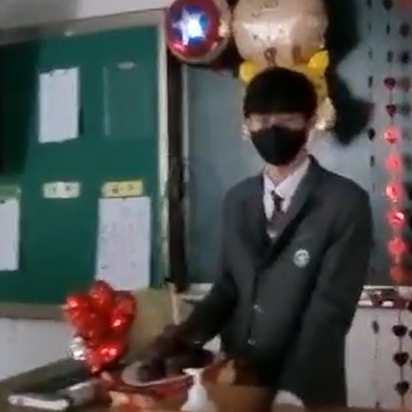
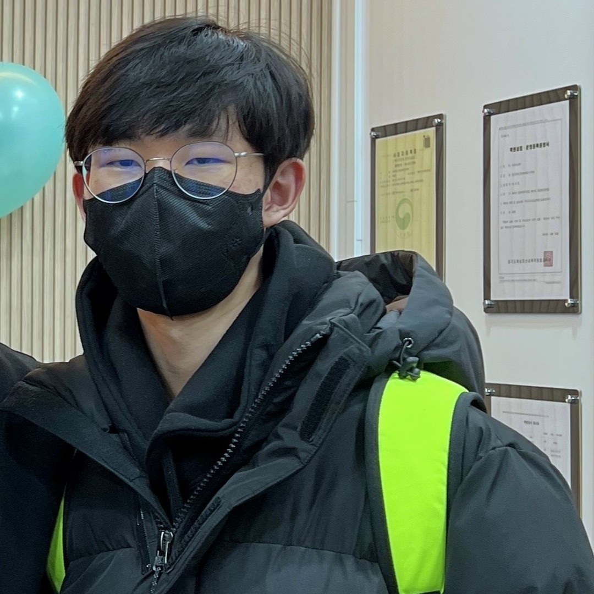
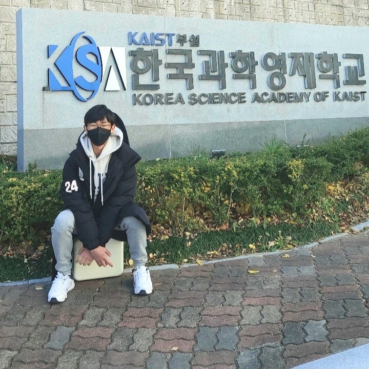

|
O Chansol was born in Uiwang-si, Gyeonggi-do, South Korea on March 15, 2009.
He entered Pureun Elementary School as a first grader on March 2, 2016.
He transferred to Banseok Elementary School as a fourth grader on November 26, 2019,
but COVID-19 became a pandemic around 2020 March and most school activities were switched to online.
He transferred to Hanbaek Elementary School as a sixth grader on September 23, 2021,
and graduated from it as a sixth grader on January 7, 2022.
He entered Hanbaek Middle School as a first grader on March 2, 2022,
and graduated from it early as a second grader on January 8, 2024.
During that time, he went to THINKTREE ENGLISH.
He was finally accepted to Korea Science Academy of KAIST on August 18, 2023, and entered it on March 4, 2024.
He took a leave of absence for personal reasons on November 20, 2025.
He returned on July 21, 2026.
He is currently majoring Math and Computer Science.
But his biggest interest is in literature and art. He has appreciated various literary and art works and has written reviews about them. He has also created various works of his own. He is also interested in the humanities which inspires appreciation and creativity and also serves as a subject of investigation itself. But he does not have much knowledge yet and is focusing on making personal hypotheses and theories. With his intellectual curiosity, he is trying to appreciate more artworks and accumulate more knowledge. |
TBU |
오찬솔은 2009년 3월 15일에 대한민국 경기도 의왕시에서 태어났다.
그는 2016년 3월 2일에 푸른초등학교에 제1학년으로 입학했다.
그는 2019년에 11월 26일에 반석초등학교에 제4학년으로 전입학했으나,
2020년 3월 즈음부터 코로나19가 범유행하고 개학이 온라인으로 전환되어 자주 등교하지는 않았다.
그는 2021년에 9월 23일에 한백초등학교에 제6학년으로 전입학했고,
2022년에 1월 7일에 제6학년으로 졸업했다.
그는 2022년 3월 2일에 한백중학교에 제1학년으로 입학했고,
2024년 1월 8일에 제2학년으로 조기졸업했다.
그는 그동안 THINKTREE ENGLISH에 다녔다.
그는 2023년 8월 18일에 KAIST 부설 한국과학영재학교에 최종 합격하여, 2024년 3월 4일에 입학했다.
그는 2025년 11월 20일에 개인적인 사정으로 휴학했다.
그는 2026년 7월 21일에 복학했다.
그는 현재 수학과 정보과학을 복수 전공하는 중이다.
그러나 그의 최대 관심사는 문학과 예술이다. 그는 다양한 문학 및 예술 작품을 감상하며 평론을 작성해 왔다. 그는 역시 다양한 작품을 창작해 왔다. 그는 이러한 평론과 창작에 영감을 주며 그 자체로도 탐구의 대상이 되는 인문학에도 관심이 있다. 그러나 아직 지식이 많지 않아 개인적인 것을 더 많이 만들어내는 단계이다. 그는 지적 호기심을 가지고 더 많은 작품을 감상하고 더 많은 지식을 얻으려고 노력하는 중이다. |
 (Chansol in Hanbaek Middle School) |
 (Chansol in THINKTREE ENGLISH) |
 (Chansol in KSA of KAIST) |